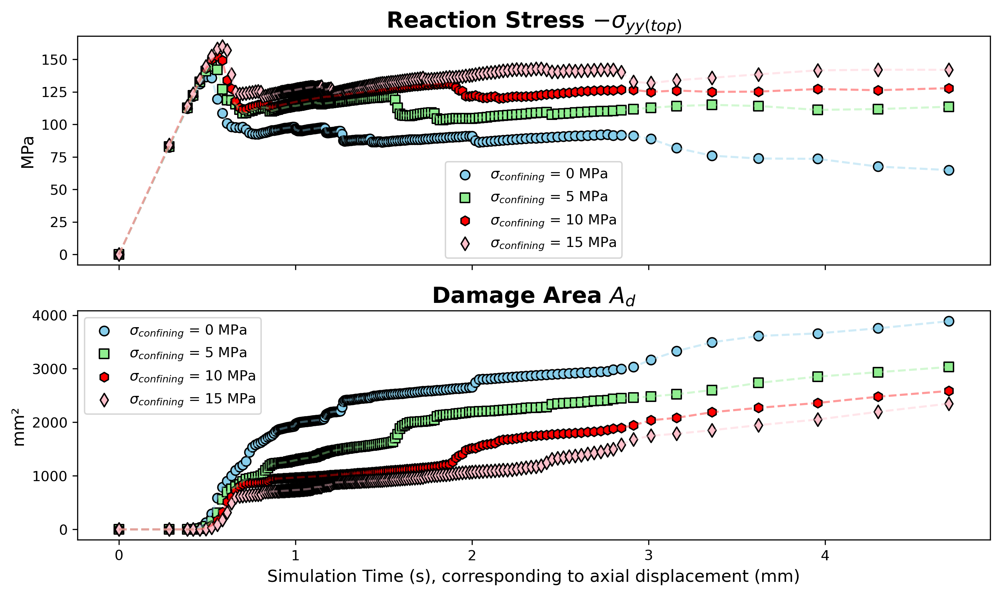

🧱 2D Biaxial Compression on Composite Material with Different Confining Pressure
🚀 Complex Loading Path in Geomaterials Testing
Triaxial (Biaxial in 2D) compression tests provide one of the most complex boundary conditions in geomaterial laboratory testing, representing a challenging loading path in purely mechanical systems. 🎯 For numerical simulations, verifying whether a model can accurately capture material strength under such conditions is crucial. Since these simulations are conducted in 2D, the problem is simplified to a biaxial compression scenario.
In this study, different confining pressure settings are applied:
✅ Lateral confining pressure (along the x-direction).
✅ Axial displacement control (along the y-direction) to induce deviatoric stress.
🔑Key Highlights
✅ Confining pressure suppresses damage evolution and enhances the ultimate stress response at the macroscale
⚠️ Note: Since deformation is relatively large in this scenario, a finite strain formulation may be required in practice. However, for simplicity, the current simulation adopts a small strain assumption.

🚀Simulation Behavior Comparison
